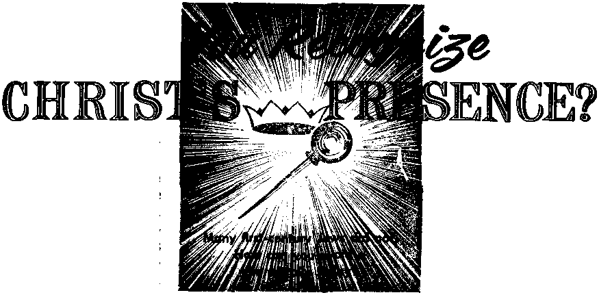

Volume XL|V Lonaon. England, May 8, 1963 Number 9

Do You Recognize Christ’s Presence?
PAGE 5
Looting the Unfortunate
■l=^T«d=iU=«i
Floral Beauties of the Arctic Tundra
PAGEI2
What You Should Know About Epilepsy
’PAGE2O
MAY 8, 1963
THE MISSION OF THIS JOURNAL
News sources that are able to keep you awake to the vital issues Bt 6M times must be unfettered by censorship and selfish interests. "Awake!" has no fetters. It recognizes facts, faces facts, is free to publish facts. It is not bound by politico! ambitions or obligations; it is unhampered by advertisers whose toes must not be trodden on; it is unprejudiced by traditional creeds. This journal keeps itself free that it may speak freely to you. But it does not abuse its freedom. It maintains integrity ta truth.
“Awake!" uses the regular news channels, but is not dependent on them. Its own correspondents are on all continents, in scores of notions. From the four corners of the earth their uncensored, on-the-scenes reports come to you through these columns. This journal's viewpoint is not narrow, but is international. It is read in many notions, in many languages, by persons of all ages. Through its pages many fields of knowledge pass in review—government, commerce, religion, history, geography, science, sociol conditions, natural wanders—why, its coverage is as broad as the earth and as high as the heavens.
"Awake!" pledges itself to righteous principles, to exposing hidden foes and subtle dangers, to championing freedom for all, to comforting mourners and strengthening those disheartened by the failures of a delinquent world, reflecting sure hope for the establishment of a righteous New World.
Get acquainted with “Awake!" Keep awake by reading “Awake!”
* —4111 1 ■■■ IN —41 U---h*
Published Simultaneously in the United States by the WATCHTOWER BIBLE AND TRACT SOCIETY OF NEW YORK. INC. 117 Adams Street Brooklyn 1. N, Y., IL S. A.
AND IN England by WATCH TOWER BIBLE AND TRACT SOCIETY Watch Tower House, The Ridgeway London N.W. 7, England
N. H. Knorr, Prestrtezti Grant Sutter, Secretary
Printing this issue: 3,800,000 4d
“Awake!” Is pa billed In the fallowing 25 langtragrt: Semimonthly—Afrikaans. Clnyunjw, Danish, Dutch, English. Finnish, French. Gutman, Greek, Italian, Japanese, Norwegian, Poftujw, Spanish, Swedish, Tngolog, Zulu, Monthly—Cebu-VIwan, Chinese, Ilceanu, Korean, Mala-yjdMit, Polish, Tamil, Ukrainian.
Yearly subscription rales for afrni.ftiont.hly editions AmWloa. M.S., 117 Adams St., Brooklyn ]. N.V. $1 Austral ta, 11 Beresford M.. Strilhtlcld, VS.W, 8/-Canada. 150 Prlitseland Ave.. Toron u> 19. Orii SI England. Watch Tower llnuse.
The Ridgeway. London N.W, 7 7/-
New Zealand, 1 New North Rd., Auckland. S.W. 1 7/-
Soitb Africa, Private Rkk 2. I'-O IChnd’rfnntcin. Tvl. 7 fie Monthly editfOM half the above rates.
copy (Australia, 5d; South Africa, 3J/2c} RefiltiajicBJ for anhscriptlonfr* should he sent to the office In yuur country. Otherwise send ymir remittance to London. Notice of expiration is sent at least two Isnuei before BUbscriuLlon expires.
CHANGES OF ADDRESS khoild reach us thirty dayi before ywr moving date. Give is yoir old and new address lit poeilble, your old addre» label). Write Watch Tower, Watch Tower koise, The Ridgeway, London N.W. 7, England,
_
Entered as secern d-claa^' hi alter at Brooklyn, N.Y.
Printed in England
The Bible translattan used In “Awake!” 1$ the New World Translation of the Holy Scrfptir&s, 1961 edition. When rttier translations are used the following symbols will appear behind the citations:
AS - American Standard Version AT -> An American Translation AV - Autlia'jKort Version 116111 Da ■ J. N. barby’s version
Dy ■ Catholic Donay version ED - Th* Emphatic Diaglott JP - Jewish Mibltcatlon See. Le ■- Isaac Leaser's version
Mo ” James Moffatt’* version Ro - J. H. Rotherham's version RS - Revised Standard Version Yjj - Robert Yiyung's version
CONTENTS
Do You Recognize Christ’s Presence?
Religious Beliefs in
Floral Beauties of the Arctic Tundra
Benefiting from the Paradise Book
Systems of Measurement
What You Should Know About Epilepsy 20 A Nation's Health.
“Getting There Is Half the Fun” “Your Word Is Truth”
How Often Did the Cock Crow?
Watching the World

Volume XL|V Lonaon. England, May 8, 1963 Number 9
DO YOU want to take the right course?
Do you want to take the wise course, the course that really pays? Then, at times, you must be able to say No. Your success, your happiness, even freedom itself may well depend upon your being able to say No at the right time. Not being able to say No has brought distress and regrets to countless persons. In fact, all human misery is due to the fact that Eve did not say No to the serpent, and Adam did not say No to Eve.
Saying No at the right time is O so important! Are you able to say No? To whom, do you ask? To yourself, first of ail. Yes, wisdom and right principles often require that we say No to ourselves. You know your weaknesses; be alert to them when temptations arise. ‘Keep strict watch that how you walk is as a wise person.’ If you are overweight you must be able to say No at the dinner table long before you feel full. Difficult? But you well know that the results are worth it—Eph. 5:15.,
Or does your weakness happen to be spending money injudiciously? Then put up your guard and force yourself to say No, No, No, when shopping or passing tempting window displays. If laziness is your vulnerable spot, then you must say No to yourself when you are tempted to sleep late, when there is work to be done about the house but you want to take it easy, or when you see an opportunity to loaf on the job. Then again, ever so many are unable to say No to a television program, but cultivating self-control along these lines is to your best interests. And since the heart is deceitful, guard against the path that leads to temptation. So pray, ‘Do not lead me into temptation,’ and mean it.—Matt. 6'. 13; 26 -.41.
Then there is the matter of saying No to the importunities of well-meaning friends and relatives. Your best friends may well be your worst enemies when they cajole you to pamper yourself, to yield to temptation, when they say, “Take it easy!” when you know full well you should exert yourself. Yes, when temptation is sugar-coated by the kindness of well-meaning friends, then especially you must be able to say No. The Gospel writer Matthew tells us that on one occasion Peter meant well, but he was so much mistaken that Jesus not only said No but: “Get behind me, Satan!” Peter wanted Jesus to take the easy course. How mistaken he was!—Matt. 16: 23.
Can you say No to sales talk? Be on guard; do not let the flattery of a clever salesman make you his easy prey. You are the steward of your money, earned or yet to be earned. Do not follow the modern trend of burdening yourself down with a lot of debts to be paid off in installments. Ilf you make it a rule to buy only what you are able to pay for in cash, it will be a great help in saying No to all manner of inducements and may save you many regrets later.—Rom. 13:8.
Or at times circumstances may throw you into close association with bad companions, as at your place of work, or at school, should you be a youth. When they seek to entice you to join them in wrongdoing, you must be able to say No. As a wise king long ago counseled: “My son, if sinners try to seduce you, do not consent. If they keep saying: ‘Do go with us.’ . . . my son, do not go in the way with them. Hold back your foot from their roadway. For their feet are those that run to sheer badness."—Prov. 1:10-16.
Today, as never before, unprincipled persons are out to seduce the innocent of both sexes in their quest for various depraved pleasures. Then, above all other occasions, is the time to say No! Do not argue with them; do not try to explain. There simply are no merits in their offers; only bitter regrets you will reap. Then is the time to call to mind the example of Joseph when tempted by Potiphar’s wife, and flee as did that handsome young Hebrew. Likewise a young lady must be able to say No and go home if her escort forgets to act like a Christian gentleman. —Gen. 39:7-12.
Being able to say No may be said to be especially important for those having oversight, such as schoolteachers, foremen, superintendents, presiding ministers, and suchlike. They may not be unduly swayed by the desire to be a good fellow, to be popular, so as to fail to say No when they should. Especially must parents be able to say No to their offspring when wisdom dictates that they must be firm. As a best seller of recent years observed, the reason that youths get in trouble with the police is that the police are often the first ones these youths meet who say No and mean it. It is a tragic mistake when parents say No but do not really mean it. As Jesus, put it, “Let your word Yes mean Yes your No, No.”—Matt. 5:37,
But there is also the matter of how to say No. Parents in saying No to their children can do so undersfandingly, giving reasons or explanations, being aware how the refusal will be felt by the child, coupling kindness with firmness so that the child will realize that love and principle are at work. As the Bible says, “Do not be irritating your children."—Eph. 6:4.
There is yet another aspect of this matter of saying No, and that is being sure that saying No is not just a bad habit, merely a case of being contrary, like the mule or camel There is a time to say Yes even as there is a time to say No. Do not let your saying No be merely a matter of being uncooperative, indifferent or miserly. Do not say No to some generous impulse you feel if you are able to act upon it to the benefit of your fellowman. When it comes to being helpful, when asked to assist in an emergency, be generous as opportunity requires and your means permit
So when it comes to your own weaknesses or bad desires, when it comes to the mistaken kindnesses of others or when it comes to those that would exploit you, by all means say No and mean it; yet not without the tact and kindness that the occasion or the subject may deserve.
De
Jesus Was Rejected Six months later Je-
IN THE first century of our Common Era the Jewish nation smarted under the yoke of Roman domination. They longed for deliverance. Many Jews hopefully looked to the scriptures that foretold the coming of God’s appointed king. They anticipated that he would smash the hated Roman yoke from their necks and lead them to a position of prominence. They were, therefore, keenly interested in knowing when God’s promised king would come.
The prophet Jeremiah had recorded this heartening promise of relief some 600 years before: “ ‘Look! There are days coming,’ is the utterance of Jehovah, ‘and I will raise up to David a righteous sprout. And a king will certainly reign and act with discretion and execute justice and righteousness in the land. In his days Judah will be saved, and Israel itself will reside in security.’ ”—Jer. 23:5, 6.
Being familiar with Scriptural promises such as this one, the Jewish people must have been electrified by the announcement of John the Baptist in the spring of A.D. 29: “Repent, for the kingdom of the heavens has drawn near.” ‘Could this really be the time for God’s kingdom to come? Is the promised king actually here? Will I have the opportunity to see him and enjoy his blessings?’ These must have been some of the thoughts racing through the minds of the people, as
“Jerusalem and all Judea and all the country around the Jordan” made their way out to John the Baptist. —Matt. 3:2, 5.
sus, the humble carpenter, traveled from his hometown of Nazareth, in Galilee, some sixty miles southward to John at the Jordan River to be baptized. It was there, while coming up out of the water, that Jehovah anointed him, designating him as the king of His heavenly kingdom. Because of his presence as the anointed king it was proper that Jesus also take upon his lips the announcement: “Repent, for the kingdom of the heavens has drawn near.” —Matt. 4:17; 3:13-17.
The overtowering question before the people of Palestine during the next three and a half years was: ‘Is this Jesus the Messiah, Jehovah’s promised king?’ The meek and humble Jews who, with an open mind, were willing to examine the prophecies in the light of Jesus’ life and ministry were convinced beyond any question of doubt that “this is the Christ [Messiah],” “the Holy One of God.”—John 7:41; 6:69.
Others were of a different mind. The account says that “a division over him developed among the crowd.” In their anxiousness to be delivered from Rome and to be exalted politically, many, including the religious leaders, had eyes only for God’s prophecies concerning the Messiah, coming as a mighty ruler. The Jewish Encyclopedia in its eighth volume, on 508, noted that, during the rule of Herod the Great and his family, there was a “belief in a Messiah,” who, it was hoped, “would put an end to the impious Roman rule, and would establish His own reign of peace and 1 justice in its place.”—John 7:42-44.
Because of this consuming desire for a king that would deliver-them from oppression many Jews overlooked the fact that the Messiah was foretold to come twice, first to die as a sacrifice for obedient men and then, during his second presence, to be a reigning king over an everlasting government. Stubbornly they refused to examine Jesus’ life and ministry in the light of the Scriptures. They closed their eyes to his miracles and marvelous works, refusing to consider how they were in fulfillment of Bible prophecy. Too proud to accept correction, particularly from those to whom they felt superior, they rejected Jesus as the Messiah—even to the point of plotting his death.—Isa. 7:14; 9:6; 53: 3-12; Matt 2:2-6, Mic. 5:2; Zech. 9:9.
Today we live at a time comparable to the first century. How so? In that then the Jews were looking for the appearance of the Messiah, and, similarly, Bible readers today entertain expectations relative to his second presence. These expectations have been aroused by Bible prophecies, as were the Messianic hopes of the people in the first century.
No doubt the “belief in a Messiah” that existed at that time was due in particular to Daniel’s prophecy, which foretold: “From the going forth of the word to restore and to rebuild Jerusalem until Messiah the Leader, there will be seven weeks, also sixty-two weeks.” These “seven weeks, also sixty-two weeks,” that is, sixty-nine weeks until the coming of the Messiah, were not weeks of days but were weeks of years, such as are mentioned in the Jewish Mishndh. If one begins to count these years from when to Nehemiah was issued the word "to rebuild Jerusalem,” in 455 B.C., he will find that they run out in the first century of our Common Era.—Dan. 9:25; Neh. 2:1-8.1
So as Bible prophecy pointed to the Messiah’s first coming nineteen centuries ago, and, as a result, stimulated much controversy on the subject, similarly, Bible prophecy identifies the time of Christ’s second presence. How so? Again it is a prophecy of Daniel that helps to do this.
When Jesus was on earth he spoke of “the times of the Gentiles,” or, as rendered in a modern Bible translation, “the appointed times of the nations.” (Luke 21: 24) During these “times,” which began in 607 B.C. with the overthrow of God’s typical kingdom of Judah by Babylonian armies, the Gentile nations would rule without having their existence interfered with by the kingdom of God and its king of the line of David sitting on Jehovah's throne. In the fourth chapter of Daniel’s prophetic book Jehovah revealed that the times he allotted to the nations for treading down His kingdom were seven in number. The conclusion of these seven times of Gentile domination would therefore be marked by the installation of his anointed king, Christ Jesus. When would this be? When were the seven Gentile times due to end? —Dan. 4:16, 23, 25, 32.
During the first world war a Manifesto was issued by a number of England’s most noted ministers, including Baptists, Congregationalists, Episcopalians, as well as a Presbyterian and a Methodist. This widely circulated declaration announced “that the present crisis points toward the close of the times of the Gentiles” and “that the revelation of the Lord may be expected at any moment.”
However, long before this public declaration by the clergy in 1917 Jehovah’s witnesses had been directing the attention of the people to the fact that each one of these “times" equaled 360 solar years and that, therefore, the seven “times of the Gentiles” amounted to 2,520 years. Counting these years from the overthrow of Jehovah’s typical kingdom in 607 B.C., they were due to expire in 1914. “ ‘The Times of the Gentiles’ extend to 1914, and the heavenly kingdom will not have full sway till then,” explained Zion’s Watch Tower of March, 1880.2
But have the events since 1914 corroborated the accuracy of this prediction based on Daniel’s prophecy? Yes! Jesus and his apostles explained that global wars, earthquakes, food shortages, pestilences, distress of nations, fear and an unprecedented time of trouble would mark his second presence immediately prior to the annihilation of the wicked and the bringing in of lasting peace. Examine the prophecies for yourself at Matthew 24, Luke 21, Mark 13 and 2 Timothy 3:1-5, and by carefully comparing them with current events you will find that all the things foretold are in evidence today. In fact, so many conditions in the world today match the Bible prophecies regarding Christ’s second presence that it is a common topic of conversation. In this there is a correspondency to the first century, when the people up and down the land of Palestine were talking about the Messiah. But, despite the evidence, the majority of Jews rejected Jesus as being that Promised One.
Recognizing Christs Second Presence
Some today may feel that, had they been living at that time, they would never have made such a terrible mistake. But consider; Do you recognize the Gentile times as having ended in 1914 and that Christ returned and has been reigning invisibly since then? that soon he will destroy the wicked and cause earth itself to become a paradise? Do not scoff and fail to investigate if you happen to hold the popular opinion that Christ is yet to appear visibly on a massive cloud and that every eye will see him physically, rather than with eyes of faith and understanding. Remember the first-century Jews. The majority of them held a popular opinion that was wrong. And because of their misunderstanding due to insufficient knowledge of the prophecies and a haughtiness that prevented them from accepting correction, they rejected Jesus.—Eph. 1:18; John 14:19.
So instead of imitating them, show humility and a love for truth by carefully examining your beliefs. Are they based on a careful study of all the prophecies that deal with Christ’s second presence? Or are they founded merely on popular opinion, on what you have heard people say? Such a vital matter as Christ’s return demands personal investigation. Become acquainted with the Bible passages that deal with the subject. Read them often, pondering their meaning and carefully comparing them with current events. Discuss them with others. Jehovah’s witnesses will be happy to consider these Bible prophecies with you.
By giving such close attention to this vitally important matter you will avoid the mistake of the first-century Jews who failed to recognize Christ’s presence.
RELIGIOUS BELIEFS
In
“Awok*!" arraipond*M in Mexico
ancient z
DWENTY-ONE miles north of Mexico City lie the ruins of an ancient city that buzzed with activity from about the fourth to the tenth centuries of the present era. The inhabitants of Teotihuacan had a well-developed culture and religious beliefs that should be of particular interest to the people of Christendom.
Prominent among the ruina of Teotlhuachn are two pyramids, the Pyramid of the Sun and the Pyramid of the Moon. These pyramids differ from those in Egypt in that they were used aa bases for temples rather than for burial tombs. The Pyramid of the Sun stands as high as a twenty-story building. Priestly processions ascended its several flights of stairs to worship their god Quetzalc6atl from its top. Being a nature deity, he was the patron of artisans, farmers, planters, gardeners and workers of the soil, of stone engravers, cutters and builders and of goldsmiths and silversmiths.
About one mile from the Pyramid of the Sun are ruined palaces with well-preserved paintings on the walls. There was a time when the inhabitants of Teotihuacan covered all their walls with fresco paintings. Wall after wall of the palace Zacuala has paintings of gods. Quctzal-cdatl is depicted there as part man, bird and serpent. In oije mural he is shown sailing away toward the rising of the sun on a raft of serpents.
The idea of penitence is portrayed by a painting of a cactus flower pierced by seven bloody thorns. During the excavation of one of the buildings, a copy of Quetzalcoatl’s cross was found painted on a slab of clay. The presence of the cross among these pagans is not surprising, since it is a fertility symbol that was in common use by pagans in many parts of the ancient world. It appears frequently in the wall carvings of the Egyptians.
In rooms opehing off the main patio of the palace are several paintings of YacatecutU, the god of the pochteca or wandering merchants. This order seems to have had a religious origin. In the time of the Aztecs, who adopted much from the people of Teotihuacan, the pochteca spent ten to twenty years making a large fortune, but living in poverty while they did it. Then they gave an elaborate banquet, spending all they had saved. In this manner they showed their apparent belief in a moral obligation to rid themselves of all material riches.
Regarding the view the people of Teotihuacan had about death, Laurette SSjournd said, in his book Un Palacio en la Ciudad de los Diases (A Palace in the City of the Gods): "That the conception of a new life after death might have been symbolized by the rising of a new day and by red, is not only literally expressed, but related to Teotihuacan itself. And they named it Teotihuacan because it was the place where the masters were buried. For they used to say: ‘When we die, we do not really die, because we live, we resurrect, we go on living, we awake. That makes us happy.’ That Is the way they addressed the dead one, when he died. . . . ‘Awake, the sky is reddening, dawn has come.’ . . . That is why the old people used to say: 'He who has died, has become a god.’ ”
In graves were found many clay figures, among which were figures with shaved heads. These are believed to have some relation with certain classes of priests. Clay candlestick holders were also found. Laurette S£journd made this observation about them: “It must deal with objects that, like our eandles which illuminate holy images, were placed on the charcoal burners full of ornaments of which we possess so many remains in Zacuala.”
Long before the Spaniards appeared in Mexico, these people made offerings to their images, used holy water, had priestly orders, used the sign of the cross, burned candles as part of their religious practices, believed in the immortality of the soul and had an idea of a lower region like hell. Some persons who have become acquainted with what they believed, wonder if the Aztecs, who inherited the culture of Teotihuacan, found it difficult to adopt the religion of their Spanish conquerors. In view of the fact that there are religious similarities between these heathen peoples of ancient times and Christendom, but not between them and the Bible, professed Christians find these people of ancient Mexico of particular interest
IC

HEN two dams near the city of Poona,
and ring fingers cut off.
Reports of looting often accompany the
crash of an airliner. When a plane carrying
India, burst during thirty-seven American veterans of the Ko-

UNFORTUNATE

the heavy monsoon rains of 1961, a destructive wall of water was hurled down on this city of several hundred thousand people. In a few short hours it swept away hundreds of homes and did widespread damage. After the water had subsided and the people had returned to view what was left of their property, about fifty persons ran through the center of the city shouting that the waters were coming again. The jittery people fled in terror. Meanwhile the fifty thieves stayed behind and proceeded to loot homes and stores of whatever valuables they could find.
It seems incredible that anyone could be so heartless that he would loot the possessions of disaster victims. Yet, whenever there is a disaster in any part of the world, there usually are some individuals who resort to looting. They come to the disaster area with rescue workers but, unlike the rescuers who unselfishly work to help, they come to steal what few possessions the disaster victims have left. For that reason the government usually posts soldiers with orders to shoot those who loot.
Not even the dead are respected by looters. Within less than an hour after the first of two ships exploded in the American city of Texas City in 1947, looters were taking valuables from the dead. Bodies were found with their pockets emptied
rean war crashed in the northwestern part of the United States, looters went through their pockets, stealing what was of value. The same thing happened in the Philippines at the time the plane carrying Philippine president Magsaysay crashed, killing him and his twenty-four fellow travelers. Looters entered the wreck and carried off firearms and $12,500 in cash.
Usually looters are much fewer in number during a disaster than is generally supposed, but their unscrupulous conduct earns them considerable publicity. In some cases the only incidents of looting are those done by guards that are supposed to protect damaged property. This was the case in the American city of Detroit, where three policemen were arrested for looting a home that was damaged by a tornado. When another tornado left in ruins a town in the central part of the United States, the only case of looting reported there was committed by two National Guardsmen who were assigned to patrol the area. Of course, the police generally prevent looting instead of doing it, and the fact that the reported number of cases of looting is not great is no doubt due in part to the practice of promptly posting guards in disaster areas.
Looting appears to be more widespread during wartime than in peacetime, because a government is less able to supply armed guards for patrolling ruined buildings during war. This was so in both Great Britain and Germany during World War II. There was looting after nearly every air raid. Investigators of the U. S. Strategic Bombing Survey discovered that persons who ordinarily were law-abiding people had become hardened looters. After losing their own possessions by bombings, they preyed on everyone else.
Revolutions, political uprisings and mass demonstrations also are occasions when ordinarily law-abiding people turn to pillaging the possessions of others. After Generalissimo Rafael Trujillo of the Dominican Republic was assassinated, mobs ransacked homes and stores that belonged v to members of the Trujillo family. A Trujillo-owned hardware and appliance store in the capital city was cleaned out, every removable object was carried from homes of the former dictator and his relatives, and a herd of 2,000 prize cattle and pedigreed horses was taken from a ranch owned by a niece of Trujillo. Policemen and soldiers watched the mobs indifferently, and some even took part in the looting. Finally the government ordered the military to put a stop to it. Justifying their actions, the people shouted; “They robbed millions—now it is our turn.”
Although these people may have felt justified in pillaging the possessions of that oppressive dictator, their actions were not in harmony With the principles of Christianity, which religion they profess as their faith. Those principles do not teach Chris* tlans to rob those who robbed them. The Leader of Christianity, Jesus Christ, commanded Christians: "Continue to love your enemies, to do good to those hating you, to bless those cursing you, to pray for those Who do you injury.” (Luke 6:27, 28) How can a Christian join with a mob in looting the possessions even of a hated dictator and his relatives and still be obeying this command from Jesus Christ? A real Christian will not permit the popular hatred of a deposed ruler to sweep him into committing unchristian acts.
The feeling of abandonment that accompanies these violent political demonstrations provides a cover for stealing by hardened criminals, but it also causes ordinarily law-abiding people to join these thieves in smashing store windows ahd looting the stores of merchandise. The mob gives no thought to the injury that it is doing to the unfortunate store owners. In the heat of mob emotionalism respect for property as well as for law and order vanishes. Such lawless actions are not in keeping with Christian principles.
Whether looting is done during a political demonstration, during a revolution or during a disaster, it is morally wrong. It is just as wrong to loot the possessions of a rich dictator as it is to loot the possessions of unfortunate disaster victims. In either case, looting is thievery.
Because law enforcement may not be possible during a disaster or because officials might appear to be blind to what is done to their opponents, that does not make pillaging morally right. Some people seem to think it is the thing to do if they believe they can get away with it. When the French and Moslems were clashing in Algeria, a French radio announcement stated that the security forces would not be responsible for the contents of stores forcibly opened during a country-wide strike by Moslem storekeepers. Some Europeans took this as an invitation to loot. They proceeded to pillage Moslem business establishments until French forces stopped them.
Although public officials might, at times, decline to interfere promptly in acts of looting, they usually do not permit it to go on for very long. They well know that it is like a fire that can spread rapidly, destroying all law and order.
Grinding poverty might be given as a reason why some persons will loot disaster-ruined homes and stores, but not all the poor people become looters when a disaster strikes. Poverty cannot be blamed for looting in countries that are prosperous. Looters there are not desperately poor people. The real reason for looting, therefore, must be more fundamental than poverty itself.
Personal moral standards have much to do with whether a person will engage in looting or not. When these standards are exceedingly low, what is there to restrain one from stealing what belongs to others? Like an uncompassionate brute beast, he thinks nothing of preying upon unfortunate people. By looting he demonstrates his contempt for the good, Christian principle of honesty. He shows that he lacks good moral standards and cannot truthfully claim to be a Christian.
The person who lives up to his profession of the Christian faith would not even entertain the thought of smashing store windows in a flooded area so as to carry off the merchandise in the stores, as was done in the northeastern part of the United States during a disaster in 1955. He would not be swept along with a rioting mob and join them in looting a marketplace of meat and vegetables; as was done in the Cyprus city of Nicosia in 1958. He would not dream of rifling the pockets or handbags of people killed in a plane crash or in a devastating explosion, as has been done in the United States. His moral standards would not permit him to stoop to the despicably degraded practice of looting.
For the person who professes to be Christian, the high moral standards of the Bible must be his personal standards. They require him to show love for his fellowman, doing to others what he would want them to do to him. Since he would want to be helped, not robbed, after an accident or a disaster, he should treat others in the same manner. Christian standards require him to respect honesty, not merely because the political superior authorities can punish him for dishonesty, but because it is right and good. He respects the very principle of honesty and lives by it no matter what circumstances might confront him.
A Christian must make the high moral standards of the Bible so much a part of him that they will not break down during either wartime or peacetime disasters. Whatever the situation might be, he will follow the Scriptural command: “You must love your neighbor as yourself.” (Matt. 22: 39) He will not loot the unfortunate.
SAVING LIVES
People took a second look when they noticed a sign on the back of a bus carrying lifeguards to a competition at a New Zealand beach. It read: “We have saved more people than Billy Graham.”
ents Markham published a census of Arctic plants. In this he named 28 species of fems, 250 varieties of lichen, 33? types of mosses and 762 flowering plants. So when spring suddenly bursts over the land, it is not surprising that these plains become, as one writer described them, “a series of charming little Japanese gardens with tiny trees, tiny flowers, tiny fruits, and gorgeous oriental rugs upon the earth and rocks between." Neither did the Great Gardener, who made all this beauty, stint on His planting. Every rocky crevice, every fragment of soil, as well as the open meadow, quickly becomes a flowery domain of rare beau

KT) arren Lands” is the term most fre-l> quently applied to the treeless plains of the Arctic regions. In Canada alone there are over one million square miles of such territory. But, if these lands be truly barren, why is it that thousands of caribou and reindeer consider them their favorite pastures? Hundreds of musk oxen never leave these prairies. The Arctic hare and the lowly lemming never run out of food, and millions of migratory birds find ample material to build cozy nests for rearing their young. It is evident, then, that the term “barren” is a misnomer.
True it is, King Winter rules the land supreme for nine months of the year. Then, as far as the eye can see, the Arctic plains, the tundra, are a shimmering sea of whiteness, tinged only by the blueness of the sky. Awe-inspiring is the snowy vastness. The biting cold and the seeming lack of any kind of plant life make the first-time visitor think: ‘Is it possible for this land to blossom out in a blaze of living color?’
Erroneously, some have thought that Arctic Vegetation consists mainly of mosses and lichens. However, in 1909, Sir Clem-ty. Massed in brilliant array, the whole land simply abounds in color, even surpassing the autumn finery of southern Canada and the northern United States.
Not to be left out of this colorful display are these lowly forms of plant life that affix themselves to the time-worn surfaces of the rocks and boulders. Traveling through this garden of the north, ope can notice these busy little plants at work. At work? Yes; by acid secretions these actually work at dissolving the rocks, so preparing soil for the growing of other plants in due time.

Cinquefoil
One type displays itself in leafy, silvery rosettes, anywhere from one inch to several feet in diameter. Lichen colors are often spectacular, as on the sheer cliffs of Aylmer Lake, Northwest Territories. The clear blue waters of the lake contrast beautifully with the golden, silver and lilaccolored overlay. At Etah fjord, in northern Greenland, the steep precipices are set ablaze with the flame lichen in colors of sunset orange and red. Others brighten the landscape like a sprinkling of scarlet snow at the time the tiny red, balloon-like fruiting structures are ready to release their spores. Still another type of this interesting organism reproduces by having miniature silver wine goblets filled with spores awaiting the scattering splash of raindrops.
Do you wonder why the reindeer, caribou and musk oxen choose the Arctic tundra? The large tracts of land completely covered with downy, silver-gray reindeer moss is the answer. This is their food. Other mosses provide soft, plush couches, beautifully upholstered in shades of green and reddish-brown, on the banks of streams and ponds. Natural screens against creatures that might want to disturb their privacy are provided at these watering places by thick growths of shrubs and sedges. To add the final touch, the color scheme of these outdoor boudoirs is much enhanced by the masses of Arctic flowers.
Properly, pageantry is introduced by a herald. Just so, the panoply of color that parades across the treeless plains from June through August has a harbinger. The sweet notes of the snow bunting begin to be heard in April, announcing that the icy grip of winter is about to be relaxed. At this time of the year the sun is truly “dominating the day” for almost twenty-four hours. Snow begins to melt in exposed places and around areas where winter winds swept the ground bare. Most of the flowering plants, although drowsy from winter sleep, respond to the increasing heat and light and take in some nourishment. This period of semidormant, prefloral activity ccntinues until the mean temperature rises above the freezing point. This is the command signal for the full pageantry of floral beauty to burst into view!
Leading the procession in the last week of May is the purple saxifrage, whose cheerful little faces stand out like bold sentinels against the retreating snowdrifts. Because it usually inhabits crevices and cracks in the rocks, it received its name from an old Roman idea that the plant itself actually cracked the rock (saxwm -rock + frangere - to break). A few days Vater the vnllows put forth ‘lYrtrr furry catkins. Quickly the diminutive chickweed, with its motif of five, double-petaled white flowers with orange dots framed by a mass of shiny green leaves, spreads itself around like welcoming mats for the cohorts to follow.
June brings forth a veritable explosion of color as the primroses begin their march on the edges of the melting snows. Like resolute yellow-capped soldiers, they press their advantage until every vestige of winter whiteness is routed from the land. The flowery offensive mounts in intensity with the advent of the delicate, roselike, white flowers of the mountain avens. Purple saxifrage is now seen everywhere and even the pink wild rose answers the roll call with, sometimes, two-inch blossoms. Pink carnations vie with clusters of bluebells for prominent positions. The bluish-purple, starlike rays of the aster, encircling a bright-yellow center, stand like armorial ensigns for the advancing host. Dandelions are strewn underfoot like golden plunder, while the purple virgin's bower takes up special positions along the shores of Hudson Bay. The mustering of these floral armies goes on till it reaches its climax by the end of the month with practically every Arctic plant either in bloom or in leaf.
With the conquest of King Winter complete, the brilliant floral display maintains its triumph in all Arctic lands around the globe during the first two weeks of July, The stocky lousewort and its small, pink, snapdragonlike flowers on a central stalk stand like little monuments to this fact. Now some latecomers begin to put on their own display about the time the mass spectacle becomes subdued. The dainty flowers of the white heather make their appearance just before the arctic poppy rears its graceful blossoms ten inches above the ground. This proud beauty disdains even so much as a glance at its more lowly compatriots as it keeps its pale-yellow corolla always turned to the sun. Not to be outdone, the hardy ice buttercup blooms late in July to beautify gravel uncovered by retreating glaciers. It is a plant that can live in places covered with snow for years at a time. When the snow finally leaves, out come its saucy little flowers none the worse for wear. At this same time the willow herb with its broad leaves bursts into splashes of red on the river deltas. But, Look over there.’ Why is that bog covered with snow? Look again! It is grass with two-inch puffs of silky whiteness affixed to its extremities. Yes, this is the famous arctic cotton grass, which is seen everywhere at this time of year.
These comely denizens of Arctic lands recognize no territorial boundaries made by puny men, but around the globe they flash forth their beauty to the praise of their Creator. Even at Canada’s northernmost extremity on Ellesmere Island, the ice-free valleys have amazingly rich plant life, with many flowers. At Lake Hazen, the farthest-north large body of fresh water in the world, 114 species of flowering plants have been identified. Southern Greenland in June and July is brightened with 485 species, while Peary Land in farthest-north Greenland—in fact, the farthest-north land surface in the world —is no desert. Ninety kinds of flowers have been seen there during the short growing season.
The time for fruit bearing comes in August. Thus the variety of flowers decreases noticeably. However, the landscape is still colorful, although somewhat subdued. Now is the berry time, and berries there are! Found in great quantities, their colors are unmistakable and they are edible for birds, animals and man. Red cranberries vie with yellow cloudberries as to which will be the most noticeable, while the more somber crowberries and the blue bilberries speak of the Arctic autumn as being here. Bears enjoy the bright-red mealy berries of the bearberry shrub, while humans find the yellowish-red fruit of the dwarf raspberry delightful to the taste. Though blueberries are found in every part of Arctic Canada, yet the largest and the sweetest are found on the most northerly coasts of Labrador. Among the profusion of wild fruits, some flowers, real sleepyheads, choose this time to bloom. Unashamed of showing up late, Labrador tea makes itself seen by its round, flat heads of white flowers, which show up in beds sometimes more than an acre in extent. The fragile twinflower, continuing to bloom ever since June, gives a touch of spring to what is now definitely an autumn landscape.
The last days of August arrive and heavy frosts begin. The time has come for plant life to cease its activity for another
winter. Much of the foliage begins to wither, but, as if in a final blaze of defiance against the onward march of winter, the leaves of many plants bring almost as much color as in June. Bearberry leaves turn a flaming red; the dwarf birch takes on a pretty golden-brown hue, while the willows dress themselves in brilliant yellow and, in contrast, the bilberry chooses a deep purple for its winter sleepwear.
The cycle of life of most high-Arctic plants cannot be completed in one year, so they continue to live from year to year. That is why they are called perennials. Some of these, flowering plants take many years from the time of germination to
tneir first blossom, certain ones having been known to take as long as ten years or more. Each plant spends the winter in varying steps of progression. In the greatest number of cases, flower buds start developing in spring, a full year at least before bursting into bloom. This explains why Arctic flowers blossom so quickly in springtime. Yes, with the approach of winter sleep they have flower buds completely developed and wrapped in appropriate garments, willing and ready to go to bed under a wintry snow blanket. Then they just wait patiently for the signal three-quarters of a year away that will start the panoply of floral beauty all over again.

A witness of Jehovah In Cape province, "Next morning It rained so hard I stayed South Africa, related this experience: "In a home, going out only when the rain lessened, my territory, which I had worked sev- I called at his home as I had arranged to do, eral times, I met a man Who'Showed unusual (f but he was not at home. After a third attempt goodwill. I promised to return to bring him I was about to leave when a person next door the book From Paradise Lost to paradise /? called out that my friend had gone down the Regained, When I went to deliver the book, a road about two hours ago. I went along, he met me at the gate and eagerly accepted & feeling guilty at not having kept our appoint-it, showing great interest. 1 ment. Imagine, then, how I felt when I found
"Next morning when I was preparing to x him several blocks farther down the road go out in the field ministry, he arrived at my f in a house talking about God’s kingdom to a home with his book and told me that he had $ householder with whom he had placed the read almost throughout the night; now he had last of the magazines he had obtained from many questions. After a discussion lasting & me the previous day.
over an hour, I told him I must go and keep J "When I apologized for not having called another appointment with a person who was for him at the appointed time on account of
also interested. He requested permission to the rain, he said he had been a soldier in the
accompany me, and he listened attentively to P army during World War II, and soldiers all I said at the home where I made a back- sj marched even when it rained; so it had not call. At the end of the call I told him I was A really hindered him to go out preaching in now going farther down the road to do some £ the rain. Next day it rained again, but this house-to-house work; again he asked per mis- 1 time I was at his house on time and we spent sion to accompany me. He quietly observed f an enjoyable time in the field ministry to-all I said and did at the doors. After two S) gether. Since then he continued to accompany hours of door-to-door work we returned home, ft me, and I am happy to say that he was bap-and he told me that he found it so Interesting a tized and is preaching on his own in favorable that he desired to accompany me again the 1 and unfavorable weather, as a good soldier next day. £ Jesus Christ.”

measuring out flour and other foodstuffs in their homes, men needed a way for measuring their farmland and the timber they cut, and merchants needed a means for measuring grain and other merchandise. The simple methods of measurement that people of early times devised found their inspiration in the human body.
The proportions of the human body gave man a basis for establishing systems of measurement. A basic unit in those systems was the armstretch, the distance from the tip of the middle finger of one hand to the middle finger of the other hand when the arms are outstretched at the sides. One-quarter of this distance is equal to the distance from the elbow to the tip of the middle finger. This latter distance is very close to two handspans, and a handspan is equal to ten fingerwidths. These were handy units of measurement that could be used wherever a person happened to be.
In early England the length of the armstretch was 79.20 of our present-day inches, whereas in Egypt it was somewhat smaller—73.64 inches. The length of a person’s armstretch is proportionate to his size. This fact made It necessary for the length of an armstretch to be standardized. The length of the armstretch of some noted personage was usually chosen as the standard armstretch. Among the Angles, Saxons and Danes, he might have been a big chieftain. The Egyptians probably used a Pharaoh. The armstretch is still used for roughly measuring cables and cordage.
The sailor in ancient times who wanted to know the depth of shallow water over which he was sailing determined it by dropping a weighted line to the bottom. The line was measured in armstretches of about six feet. Each armstretch was called a fathom, a term still used today among seamen.
The armstretch was a basic part in a larger unit of measure known as the chain. It was equal to ten armstretches measured off on a light rope, with a knot at the end of each armstretch. The term “chain” probably was used because the series of knots marking the armstretches resembled a chain of beads. Today the length of a chain is considered to be sixty-six feet, but in olden times its length varied somewhat, depending on what was accepted as a standard armstretch. When the big armstretch of the Angles and Saxons (79.20) is used for establishing the length of a chain, the sixty-six-foot length is the result.
For measuring the acreage of farmland, the task was simplified by using chain measure. Two persons would grasp the knotted rope at opposite ends and proceed to measure off the land. A ten-acre field would be ten chainlengths long and ten chainlengths wide. The custom was to plow such a field from end to end, running the furrow the full length of it. Thus a field that was referred to as being a furrow long was ten chainlengths, or about 660 of our feet. This still larger unit of measure became shortened from a furrow-long to furlong. It was equal to a hundred arm-stretches. Ten times this . (1,000 arm-stretches or-fathoms) made up a nautical mile, which today is set at 6,080 feet in Great Britain. When the customary six-foot armstretch of marine measurements is used, a figure very close to this is obtained.
The distance from the elbow to the tip of the middle finger was called an “ell,” which was an old word for arm, meaning the forearm. The people of the Mediterranean area called this distance a cubit. It was about eighteen inches. As might be expected, its exact length' varied somewhat. There was also a royal cubit that was a little more than twenty inches.
Two spans, each being about nine inches, equaled one cubit. A span is the distance across both hands at the knuckles when they are laid flat with thumbs against each other. It is also the distance between the tips of the thumb and small finger of one hand when these fingers are spread as far apart as they will go. Whichever method is used for measuring a span, the distance is about the same for a normal person. Two of these spans are close to the distance from your elbow to the tip of the middle finger. Something measured as one cubit plus a span would be about twentyseven of our inches.
Going farther down the measurement scale of the ancients, we find that a span consisted of two smaller units called “handbreadths.” As was mentioned, the distance across both hands when they are laid flat is equal to a span. One handbreadth, therefore, is half a span. The size of hands varies with people, of course, but figuring on the basis of an eighteen-inch cubit, a handbreadth would be four and a half inches. In some cases the system of measurement used a smaller handbreadth of about four inches or one decimeter on the metric scale.
A housewife in early England had a small container for measuring flour and other things used in preparing meals. This box-shaped container was made from light wood and was one handbreadth of about four inches square and one handbreadth deep. It held one cubit handbreadth and was called a “measure-full.” Grains were measured on the basis of this unit. For easy calculation, storage bins for grains were constructed with inside measurements being in handbreadths. A peck was equal to eight cubic handbreadths or measures-full. Sixteen pecks of grain was a “hlot,” which later came to be called “lot.” Whenever you speak of a lot of wheat, you could mean either a large quantity or a specific measurement of sixteen pecks.
An indispensable household tool was a slim, round stick called a “wand.” It was cut so that it was precisely ten handbreadths long, with each handbreadth of about four inches indicated on it by a shallow cut. Subdividing the handbreadths were ten indentations in the stick that marked off smaller units of measure called half-fingerwidths.
A fingerwidth is the distance across the middle finger, measured either at the knuckle or at the base of the finger. Five fingerwidths equaled a handbreadth; and ten, a span. The Greeks had a different system. They used a palmwidth of about three inches, which also has been termed a handbreadth. It was the width of four fingers of the hand, measured across the hand at the base of the fingers. They had one palmwidth equaling four fingerwidths of three-quarters of an inch each. Their cubit equaled twenty-four digits or finger-widths.
The English housewife used the wand to make the many measurements that are necessary in operating a household at a time when food supplies had to be stored in quantity and clothing had to be made at home. She could even use it for determining how much ale remained in a vat by seeing where the liquid came on the wand when it was used as a dipstick. The housewife knew that she had ten measures-full of ale for every half-fingerwidth on her wand. This was equal to twenty tankards of ale.
A unit of measure that was a little longer than a fingerwidth was called a “nail.” It was the distance from the tip of the middle finger to the second joint, or about two and a quarter inches. Sometimes it was measured from the tip of the thumb to the second joint. A longer unit used for roughly measuring cloth was the “finger,” a measurement equivalent to about four and one-half inches. It is approximately the length of the middle finger. Some of these small units of measure are still used today.
The Rod
The man of the house needed something longer than a wand for measuring timber and lengths of lumber. For this purpose he used a rod. This was a piece of wood cut to the length of five wands, or about sixteen and one-half of our feet. Like the wand, there were no numbers on it. Ten evenly spaced cuts divided it into ten ells or cubits. These deep cuts were called scores. Each ell was subdivided into twenty thumb-breadths, which were indicated by shallow cuts. A thumb-breadth was the distance measured across the thumb at the base of the nail, which is close to one inch.
The word “score,” originally spelled “skor,” is Old Norse for notch. Since each notch in the rod represented twenty fingerwidths, the word “score” has as one of its meanings today “a group of twenty.” Thus sevenscore and ten meant seven ell marks on the rod plus ten fingerwidths, making a total of 150 fingerwidths.
At times a wooden rod would be unhandy to carry. To overcome this problem a light cord was cut the same length as the rod after knots had been tied to mark off the ten ells. The cord could then be easily carried into the woods for use in measuring timber. It was also handy for determining the amount of firewood a man had stacked up by his house. A pile that was four feet wide, four feet high and about eight feet long had measurements, when added, that just about equaled the length of the cord. He could then say that he had a cord of wood. The cord of wood is officially set In the United States today at 128 cubic feet.
In time the builder’s rod underwent a change; the divisions were altered. Instead of 200 thumb-breadths, it was divided into 198 thumb-breadths. A mark for every twelve of them indicated a unit of length called the English foot. Because the thumbbreadth was a twelfth of that new length, it was called an “uncia” (for twelfth). English workmen called it an “unch.” Today we speak of it as an inch.
Although the English foot began to be used in England about seven centuries ago, it was not an English idea. It had been used earlier by the Romans and the Greeks. In fact, ancient Babylon is known to have divided a foot measure into twelve equal parts. Basically it was the length of a man’s foot, which, of course, varied con-slderably. In Greece a foot was considered to be nearly one-fifth of a soldier’s double step. Five feet equaled a bema-length, the distance of the double step. The foot was also computed to be two-thirds of the Greek cubit of 18.23 of our inches. Sometimes it was considered to be three-fifths of the longer cubit of 20.75 inches. In the Solon system of measurement, a foot was subdivided into four palmwidths, each of which in turn was equal to four fingerwidths, Alexander the Great carried this system to the lands he conquered.
The word "mile” comes from the Latin mille passuum, meaning 1,000 paces. Like the Greeks, the Roman pace was a double step equal to about five feet. This gave the Romans a mile that was about 280 feet shorter than the mile of 5,280 feet used today,
Around the fourteenth century English merchants devised a system of weight measurements that used a fundamental unit called a pound. It was subdivided into sixteen smaller units called ounces. The Romans had a somewhat similar arrangement. They called their unit of weight a "pondus,” and it too was subdivided into sixteen parts called “uncias.” The heaviness of a cubic foot of cool water equaled sixty pondus-weights. The same amount of water in the English system equaled 62} pounds.
Some Italian cities had a unit of weight somewhat less than the pound and they called it a “libra.” One of its smaller units was called an “onzia.” The abbreviation for libra (lb.) came to be used to represent the English pound, and the abbreviation for onzia (oz,) was used to represent the English ounce.
The pound was somewhat similar to the old skale-welght used by the people of early England, The measure-full used by them had a capacity of a cubic handbreadth. The weight of that much cool water established a basic unit of weight for them. It was caiiei a measure-weight. Half of it was equal tn a tankard-ful] of cool water and was called a "skale-weight." At times this skale-weight is referred to as an early pound. Two thousand of them equaled a tun-weight.
When, adjusting their pound to this earlier system, the English merchants established a tun-weight at 2,240 pounds. Today this is called a long ton. Among the wine merchants a system was used in which a cubic foot of wine weighed sixty pounds, two and a half pounds less than the same amount of water. Eight barrels of wine equaled 2,000 of these wine-based pounds. This was a tun-weight that was a little lighter than the one used throughout England whose weight was based on the heaviness of a cubic foot of water. It was called a “wine ton” and also a “short ton,” A small liquid measure that was onesixtieth of a cubic foot of wine, called an English pint, had a weight of one pound.
In the various systems of measurement that sprang up in ancient times, there was a certain amount of similarity because of their having been based upon the measurements of the human body. Although these systems had their discrepancies, they met the needs of the many people who used them. From them came some of the units of measurement that are used today. By using the human body as a basis for developing systems of measurement, man has been, as with almost every form of scientific knowledge, instructed by the intelligent designing clearly evident in the things made by the Creator.
W<M<M<M<M<M
OF ALL the ills that afflict mankind, one of the most spectacular is an epileptic seizure. Often without warning and with dramatic suddenness the victim may utter a gut-teral cry, contort his face, and fall to the ground unconscious. Momentarily, his entire body is made rigid by a spasm that tightens all his muscles. Then, after a very brief interval, his muscles go into rhythmic contractions, jerking his body around violently. Extreme muscular compression of the salivary glands forces profuse amounts of saliva from the mouth, which, mixed with blood from biting the tongue, often flows forth as a pinkish froth. With his breathing apparatus immobilized by the convulsion, the victim’s face turns red and then blue for want of air.
After what may seem an age to anxious onlookers (but actually is only a minute or so) the arms and legs stop flailing, the body relaxes and, as air begins to enter the lungs, natural color returns. Consciousness is quickly recovered, and, in a few minutes, the epileptic is up, fully alive, and often able to resume his normal activity as though nothing happened.
It may be months, weeks, days, or, in a few severe cases, a matter of hours before the next seizure. A record kept on a group of epileptics showed that 392 had less than five such attacks a year, 1,176 had less than fifty of them a year, while only thirty-four had more than a thousand a year. In the interval between the attacks the epileptic is completely normal, generally able to carry on the daily tasks of living as competently as the next person. But, unfortunately, due to centuries-old superstitions and a lack of knowledge as to the nature of the illness many people fearfully shun epileptics, and others treat them as unclean, cursed members of the human race.
Superstitions and Misconceptions
The ancients were well acquainted with epilepsy, the earliest full discussion being written, about it by the Greek writer Hippocrates around 400 B.C.E. In fact, it is from the Greeks that we get our word epilepsy; it being drawn from the Greek word meaning seizure.
Although in the past it was generally believed that epilepsy was evidence of demon obsession (the Greeks calling it “the sacred disease" because they thought some god was responsible), the Bible does not support that misconception. At Matthew 4:24 it says that the people brought to Jesus “all those faring badly, distressed with various diseases and torments, demonpossessed and epileptic and paralyzed persons, and he cured them.” Note that it says “demon-possessed and epileptic,” to draw a distinction between the two.
While it is true that the demons were able to produce epileptic symptoms in certain persons, in one instance periodically throwing the victim to the ground and causing him to foam at the mouth, the Bible was not inferring that epilepsy was an illness generally caused by demon obsession. (Matt. 17:14-18; Mark 9:14-29;
Luke 9:37-42) In the same way the Scriptures show that the demons were able to produce the physical defects of blindness and dumbness, but that did not mean that blindness and dumbness were commonly caused by demon obsession. It was the exception rather than the rule. (Matt. 9:32, 33; 12:22) And just as we recognize today that these afflictions have natural or physical causes, so recent studies have proved that epilepsy does also.
Since centuries-old superstitions and misconceptions continue to shroud this unusual illness, it is good that we know something about it.
Hippocrates, the “father of medicine,” identified the source of the trouble as a corruption in the brain. “It appears to me,” he said, “in no way more divine nor more accursed than other diseases, but like them, has a natural cause from which it originates.” Recent studies have supported this conclusion, as Dr. August S. Rose observed: “Modern research has firmly established the importance of focal disturbance in brain function as the basis of epilepsy.” Biochemists are now hard at work trying to find the cause of this “corruption” or “disturbance” in the brain.
For a long time it has been known that the brain sends out electrical impulses that are carried by the nerves to activate the whole body. In 1929 a German doctor by the name of Hans Berger invented the electroencephalogram (electric brain record) , an instrument that is able to measure these “brain waves.” It picks up the electrical pulsations from the scalp, amplifies them a million times, and registers these wave patterns by writing a line on moving paper. It is similar in principle to the electrocardiograph, an instrument that records the electrical currents generated by the heart.
With the help of the electroencephalogram it has been found that epileptic seizures are associated with electrical impulses from the brain that register unusual brain-wave patterns. Dr. John E. Eichenlaug explained: “The electrical tickle which causes epilepsy comes from a slightly deformed or poorly functioning patch of brain substance. ... As a general rule, however, the abnormal patch is just there. It may look normal in every way, but show up when the electrical actions of its cells are measured. . . . Except for its effects on the rest of the brain when it pours out electrical irritation, the abnormal patch does not cause trouble.”
There are different types of epilepsy, which, in turn, are associated with different abnormal brain-wave patterns. First, there is the grand mal, or big-sickness seizure, which was described in the introduction of this article. Quite different is the petit mal, or small-sickness attack. These occur much more frequently—up to hundreds of times a day—but, as a rule, last for only a few seconds. They may consist of a fleeting, almost unnoticeable, loss of consciousness accompanied by some minor unusual muscular activity.
Dr. Howard D. Fabing described a petit med attack experienced by an attractive teen-ager during a visit to his office: “We were chatting when her face suddenly lost its youthful aliveness, her eyes rolled upward, her nose puckered, and she sniffed vigorously, as though trying to define a wayward odor. At the same time her forearms, which were clutching her schoolbooks, made a small upward movement, and her books slid low in her lap. Then her eyes returned to the normal position, the puckering and sniffing stopped. ‘Pardon me,’ she said smiling, ‘What were you saying?’ The whole episode had not lasted
more than fifteen seconds. She called it one of her 'blank spells.’ ’’
A third type of epilepsy is called Jack-sonian seizures, being named after Dr. Hughilngs Jackson, who did extensive epileptic research toward the end of the nineteenth and early part of the twentieth century. These attacks are unique in that they affect only one extremity or, at most, one side of the body. During the seizure the patient generally retains consciousness and is thus able to observe the jerking or twitching of the affected part of his body, although he is powerless to stop it. This one-sided type of attack suggested to Jack-son that certain sections of the brain controlled specific bodily parts and functions. Recent research has verified this.
The last major type of seizure, psychomotor attack, is quite different from other forms of epilepsy, occurring in the mental or emotional realm. In these attacks the patient does not have a convulsion, but, instead, there is a sudden interruption in the stream of consciousness accompanied by a confusion of mind, jumbled speech, and illogical behavior.
Dr. Manfred Sake!, a recently deceased authority on the subject, said of such attacks: "The patient may, in the middle of a conversation in his home, say, ‘I would like to go home; it’s late,’ although he is at home. . • • The patient with a psychomotor seizure may persist in executing the intentions he has uttered and persist to the point of struggling with anyone who may try to prevent him from doing so.... After a few minutes, the patient will become calm again and will have no recollection whatever of the incident that has just occurred. He will be perfectly normal and unself-conscious:”
Contrary to the general impression, these various types of epilepsy are not rare. Although accurate figures are hard to come by, it is estimated that as many as 1,500,000 persons in the United States, or nearly onfe out of every hundred, are subject to seizures; the ratio for the rest of the civilized world being about the same. As noted by Dr, Fabing, “the line between the normal and the convulsive state is narrow.”
This seems to be especially true of certain individuals who apparently have a predisposition to seizures. Evidently such persons can become epileptic if they are subject to head injuries, certain diseases or extreme emotional disturbances. This is the opinion held by authorities on the subject, as, for example, Dr. Edward M. Bridge, who said: “Electroencephalographic studies show that 10 to 15 percent of the general population show abnormal brain waves of the epileptic type. Theoretically, these individuals constitute a reservoir of susceptibles from which cases of epilepsy and convulsive disorders arise.”
But just because a person may have inherited a predisposition to epilepsy and an accident or sickness triggers the illness, should that one be avoided, treated as an outcast, or viewed as some freakish oddity? Of course not! Yet that is what is happening in many supposedly enlightened societies. As Dr. Joseph W. Stein of Washington, D.C., observed: “You’d think they were still boring holes in skulls to let out the evil spirits. The way people in this country treat epileptics is like something out of ancient history. There is a great need for educating the public.”
An evidence of the type of treatment received by epileptics is the fact that some ten states in the United States forbid epileptics to marry and eighteen have sterilization laws applicable to them. And these laws exist even though experts are agreed that the genetic factor in epilepsy is in-
signiftrant. But perhaps the epileptic’s greatest problem is in finding empldyment. For example, one recent survey revealed that 73 percent of the manufacturing firms in one section of the United States would not hire them.
Knowledge of the facts i¥garding epilepsy is needed to dispel the darkness of superstition and ignorance and to cultivate a proper attitude toward the affliction. As it is, Dr. Pearce Bailey observed: “Epilepsy is the only common disorder where the sufferer is more handicapped by the attitude of society than by his disability.” While it is a fact that epilepsy is an abnormal bodily function, are not also the growth of cancerous cells and high blood pressure? So why treat an epileptic with less love and consideration than a cancer victim, or one suffering from hypertension?
True, a grand mal is spectacular and not especially pleasant to watch, but remember that it is painless, at least during the attack, and it is almost never fatal. Bystanders are in no danger, for the epileptic will lie where he falls, and will soon recover. But you can be of assistance during the attack. How so? You can break the victim’s fall so that he goes down easily and does not lie against or too near hard or sharp objects. Loosen restrictive clothing, especially the collar and belt. Place some soft, firm object, such as the comer of a magazine or a folded handkerchief, against the back teeth so that he does not bite his tongue, being careful not to put your fingers between his teeth. And you might put a towel or coat under his head and turn his head to one side to allow his saliva to flow out and thus prevent gagging.
Most helpful, however, will be your attitude when he recovers. Plan something encouraging to say. A matter-of-fact attitude, as though the attack was nothing unusual but was only one of the ordinary processes of life, will put the epileptic at ease.
Yes, as with all illnesses, understanding and love will help immeasurably to conquer epilepsy. The prospects have especially brightened in recent years. The medical profession has supplied effective weapons in the form of drugs, which, in many cases, have proved invaluable in controlling seizures. But, as noted by one doctor: “Like the diabetic the patient is controlled rather than cured. He must take his medication daily.”
Although the cure for epilepsy has not yet been found, complete victory Is in sight. However, not through the efforts of medical research, but by means of the kingdom of God, which is now so close at hand. Under its beneficent rule the King Christ Jesus will again demonstrate his ability to cure epilepsy.
A NATION’S HEALTH
Dr. Herbert Ratner, professor of preventive medicine and public health at Loyola
University Medical School, Chicago, observed concerning the health of Americans:
“We are flabby, overweight and have a lot of dental caries, fluoridation notwithstanding. Our gastrointestinal system operates like a sputtering gas engine. We can’t sleep; we can’t get going when we’re awake. We have neuroses; we have high blood pressure. Neither our hearts nor our heads last as long as they
should. Coronary disease at the peak of life has hit epidemic proportions. Suicide is one of the leading causes of death. We suffer from a plethora of the diseases of civilization.”

0
sharp curve
By “Awake I correspondent in the Andes
T^HE bus bounced around a
and came to an abrupt and grinding halt before a tiny cascade of crystalline water that tumbled boisterously into its granite basin at the side of the road. The driver poked expectantly among the contents of a box on the floor to his left and smilingly came up with a retired brake-fluid can. We were going to “water up’’ again.
He deftly unbuckled the leather strap that seemed to hold the hood and fenders more or less together, and as he lifted the hood with the creak and groan of oil-starved hinges, a sudden burst of steam belched forth, momentarily enveloping him in a cloud of white.
Having traveled many times under similar circumstances, and not at all unaccustomed to these frequent prolongations of one’s time en route, I determined to make the best of the situation. After all, “Getting there is half the fun,” say the travel posters. So after manipulating my six-foot-two-inch frame into a reasonably comfortable position in a space obviously intended for smaller fare, I relaxed and let my mind wander.
"Away from the heights of these Andes Mountains in lands where there are superhighways and double-decker buses, would
IS HALF THE FUN
they believe it?” I asked myself. Would they, indeed, could they, from the innermost regions of their imagination, evoke such
an image as the travel conditions in this remote part of the world? But, then, how could they believe? How could they know, unless someone revealed to them a few scenes of twentieth-century travel in a forgotten-century setting?
Now, please, do not get me wrong. We have beautiful “Pullman”-type buses and multilaned highways to compete with almost any other part of the world. The events related here are the exception and by no means the rule. I like to think of them as the condiment and spice that go to make one’s travels less a journey and more an adventure.
From the luggage rack, topside, came the gobble of a disgruntled turkey that continued to voice its adverse opinion of the elements that contributed so to its discomposure. I remembered watching them sew him into a burlap ball with only the fore and aft protruding through opposite holes in the bag. Its repeated lament quickened the sympathy of a young goat trussed up at the hoofs with a bit of twine and anchored to a spare wheel. The two wailed together.
Forgetting for the moment our driver and his immediate problem, I concentrated on the scene about me. I have already mentioned the waterfall on our right. On our left was nothing—that is, nothing for the first 1,200 feet straight down! We were perched on a tiny thread of a road, hardly wider than the track of the wheels beneath our coach, looking down upon a vast expanse of void until one's gaze came to focus on a silver ribbon of mountain stream in the depths bqlow.
Beyond us some fifty paces, three crude wooden crosses, stuck obliquely into the edge of the precipice, marked the scene of a fatal accident—or, at least, the beginning of one. For the accident itself must surely have been consummated somewhere far below, where the vehicle in which they rode carried three people abruptly to their destiny instead of their destination. An involuntary shudder worked its way down my spine as I remembered how narrowly my wife and I, on a previous occasion, had escaped such a fate.
It was on the eastern slope of one of the Andean mountains. We had been zigzagging down the face of the mountain in a fairly new bus with some twenty other passengers. Ahead, a series of ruts and mud puddles stretched across the road. In a gallant effort to miss the majority of them, the driver whirled the steering wheel to the right. But while the wheel spun freely in his hands, we continued on our original course, splashing wildly on. Standing upon the brake pedal, the driver finally brought the bus to a wobbly stop, happily still in the middle of the road!
Upon investigation the driver called reassuringly to his passengers that 'it was nothing much.’ I decided to see for myself what the "nothing much” was that had almost ushered us from the land of the living. As I stooped to observe the steering mechanism under the front end, I found the wheels to be heading toward opposing points of the compass. The tie rod had lost a nut on one end and had dropped free! I looked out over the edge of the road to our left and down into the gaping jaws of a. granite csiryon with ite rate.s'wnttew tvi-er. Had we been executing one of the innumerable hairpin turns at that instant would have been a simple matter of th left wheel not knowing what the right wheel was doing, and, quite probably, we all would have fallen into the ditch.
My thoughts were interrupted by a sudden pounding up front. Our driver was now trying to hammer the leaking radiator in an attempt to close the hole somewhat. As though on cue, a man to my right (whom I judged to be deaf) fell to eloquent snoring. The turkey came in two beats later, followed by the goat—a grotesque “anvil chorus” accompanied by a background of whistling wind. The proximity of the vociferous creatures above my head called to mind a previous traveling companion, which, while not registering any oral complaint, made itself known in quite a different manner.
Surprise Pacfcaqe
On that occasion five of us passengers and the driver were stranded along the Pan-American highway in the middle of a barren desert. We had waited an hour while the driver tried in vain to repair a sheared axle pin on the colectivo, an inter-provincial passenger car, in which we were traveling. Having exhausted his own resources, he decided to send one of us to the next town to report the matter and send help.
Tne 'lot fell upon a small meek fellow in shirt sleeves and a broad-brimmed straw hat. A car soon stopped and the driver shouted last-minute instructions to our little emissary as he sped away.
After two hours had passed we began to suspect the integrity of our absent companion, imagining that he must surely have proceeded to his destination with no further thought of us. But then the driver remembered that he had left a briefcase vci Vwt trciTJfi. v/x Vrife tsn. £)uriuus>’xy ’ne would return for it.
I heard the driver replacing his tools in the trunk of the car when suddenly I was snapped to attention by a frightening yell and the sharp report of his head striking the trunk lid as he withdrew in startled retreat. He stood in the middle of the road, a shaken man, unable to speak coherently. I approached the rear of the car and saw the dilapidated briefcase with a soiled old towel on top at which the driver was pointing an unsteady finger. I saw nothing alarming so I nonchalantly removed the towel from the opened briefcase, only to stare a coiled, beady-eyed boa constrictor square in the face!
Imagine putting your hand into an ordinary old briefcase in order to discover its contents without disarranging them (as our driver had done), and instead of finding fruit or clothing as might be expected, you suddenly perceive a cold mass of rippling muscle! Then you share, if in a somewhat milder form, the chilling experience of the man who still stood shuddering in the middle of the road slowly recovering his processes of speech.
When at last our little friend returned with another car to take us on our way, he innocently removed about half the serpent (all of five feet long) from its nest and very tenderly tucked it back again to show us there was no danger at all. But why? Quite simple. He was merely taking it to the capital to be sold.
A cloud of dust on the mountainside far below heralded the approach of another vehicle and the reenactment of the nerveracking mountain traffic jam. This scene Is played any number of times in a day’s travel—an experience I have not yet grown to treat with the same abandon as the local people do.
COKING IN THE NEXT ISSUE • Freedom wjfb Which to Serve God. • Angry Students on the March, a If You Were Going Around the World. • Life Patterns and Crime Prevention. • Rice—the Bread of Life.
The curtain rises on two buses, bumper to bumper, on a typical one-lane mountain road. Both drivers sit glaring at each other, leaning emphatically on their respective horn buttons and each one determined that the other shall be the one to back up —or down—the road to a suitable place where the two buses can pass with a minimum of paint scraping and chromium removal. A sort of immobile game of “chicken,” each driver trying to outwait, outstare and out-hornblow the other until the “chicken” finally throws caution to the wind and the bus into reverse and backs up. If he is fortunate, there soon appears a wider spot in the road. He always favors himself with the inside position, making the opponent take the edge-of-the-brink side. I shall never forget the first time our bus took the outside; not at all unlike walking a tightrope over Niagara Falls. But they always seem to make it—except, of course, where otherwise marked by little, weathered wooden crosses!
With a tooth-rattling CRASH! our driver dropped the hood, snatching me from the realm of reminiscence. He secured it again more or less in place with the leather strap and jumped up into the bus as his helper grabbed the crank, Twisting two wires together while pumping madly on the accelerator, he then pressed the starter button while the boy up front went through the motions of cranking, supplying the necessary grunts and groans that facilitate such -operations. The motor caught and we lunged ahead.
It takes nerve to travel like this; but, believe me, these people have it. To them, getting there is half the fun.

AMONG the incidents in the life of Jesus as recorded by the four Gospel writers that have come up for discussion is the number of times the cock crowed after Peter had denied his Master three times. According to Matthew, Jesus had said: “Truly I say to you, On this night, before a cock crows, you will disown me three times.” Consistent therewith, after Peter had denied his Master the third time, Matthew records: “And immediately a cock crowed. And Peter called to mind the saying Jesus spoke, namely: ‘Before a cock crows, you will disown me three times.’ ”—Matt. 26:34, 74, 75.
The Gospels of Luke and John read quite similarly to Matthew, but Mark relates that Jesus said: “Truly I say to you, You today, yes, this night, before a cock crows twice, even you will disown me three times.” Mark makes the same point in recording what afterward happened: “Immediately a cock crowed a second time; and Peter recalled the saying that Jesus spoke to him: ‘Before a cock crows twice, you will disown me three times.’ ” —Mark 14:30, 72.
Before considering this apparent discrepancy it seems well to note first what is meant by the “cockcrowing.” According to one Bible commentator: “It is well known that no cocks were allowed to remain in Jerusalem during the passover feast. The Romans, who had a strong guard in the castle of Antonia, which overlooked the temple, divided the night into four watches, beginning at six, nine, twelve, and three. Mark xiii. 35, alludes to this division of time. The last two watches were both called cock-crowings. The Romans relieved guard at each watch by sound of trumpet: the trumpet of the third watch was called the first, and that of the fourth the second cock. And when it was said the cock crew, the meaning is, that the trumpet of the third watch sounded; which always happened at midnight.” —Emphatic Diaglott, page 109.
Is this a reasonable explanation of the cockcrowing to which Jesus referred? No, it does not seem to be. The natural impulse of Jesus’ apostles who heard his words on that evening, as well as that of the reader of Matthew 26:34, would be to take Jesus’ words in a literal sense as applying to actual cockcrowing and not to a symbolical one, especially since the apostle Matthew here was writing particularly for the benefit of Jews. Of interest in this connection is what H. Z. Morton has to say in his book In the Steps of the Master, on pages 73 and 74, telling what he heard as he sat on the Mount of Olives:
"There was a large boulder in a barley field. I sat on it and listened to the chorus of cock crowing that surrounds Jerusalem in the dawn. . . . ‘Verily I say unto thee, “That this night before the cock crows, thou shalt deny me thrice,” said Jesus,’ This remark and its sequel is one that must rest on Peter’s own record. It . . . however, . . . has . . . been suggested that when Jesus mentioned the crowing of the cock He did not mean the common barnyard sound, but the time signal, the galll-cinium, or cock crowing made at intervals by the Roman guard from the ramparts of the castle of Antonia. . . .
“It is true that the Midrash and the Mishnah tell us that as long as the Temple stood the breeding and keeping of fowls In Jerusalem were forbidden because, by scratching up the ground they spread Levitical uncleanness. Therefore, argue some critics, Jesus could not have meant, cock crow when He said cock crow. I think it is much easier to believe that the law was not observed and that in spite of the priests, cocks crowed in the dawn around Jerusalem as they do today. It is rather curious, too, if there were no cock Crowing in the time of Christ, that, when mourning over Jerusalem, Jesus should have said: ‘How often would I have gathered thy children together, even as a hen gathers her chickens under her wings.’ ”
Coming now to the question of how often the cock had crowed by the time Peter denied his Master three times, the solution is not as difficult as it seems. Time and again one Gospel writer tells of one man when another tells of two. This does not mean that they contradict each other but simply that the one is more explicit than the other. An example of this is that of the apostle Matthew, who tells of two demoniacs and two blind men, whereas both Mark and Luke tell of only one. Compare Matthew 8:28 with Mark 5:2 and Luke 8:27; Matthew 20:30 with Mark 10: 46 and Luke 18:35.
Thus the Imperial Bible Dictionary states: “The difficulty that, according to three evangelists, the Lord Jesus announced the threefold sin of Peter before the cock should crow, while according to Mark it was predicted and occurred before the cock crew twice, is easily met. Mark’s is doubtless the more exact account, for the precise always explains the more general.” M’Clintock & Strong’s Cyclopaedia comments in a similar vein: “But Mark, who wrote under Peter’s inspection, more accurately records the very words, mentions the two cock-crowings.”
Even more to the point is what the mod-jem International Standard Bible Encyclopaedia has to say on the subject: "The cock is several times mentioned in the [New Testament] and always with reference to its habit of crowing in Eastern countries with such regularity as to be almost clocklike. The first full salute comes almost to the minute at half-past eleven, the second at half-past one, and the third at dawn. So uniformly do the cocks keep time and proclaim these periods of night that we find cock-crowing mentioned as a regular division of time: ‘Watch therefore: for ye know not when the lord of the house comcth, whether at even, or at midnight, or at cock-crowing, or in the morning.’ (Mark 13:35) [AS]
“Jesus had these same periods in mind when he warned Peter that he would betray him. Matthew 26:34; Luke 22:34; John 13:38, give almost identical wording of the warning. But in all his writing Mark was more explicit, more given to exact detail. Remembering the divisions of night as the cocks kept them,” he mentioned the cock crowing twice.
Much to the-same effect the Encyclopedia of Bible Life states: "We ourselves have been awakened by the shrill crowing of conceited Jerusalem cocks . . . ‘Cockcrowing time’ is as definite a moment here as ‘early candle-lighting time’ among Pennsylvania Mennonite farmers.”
Of course, all the foregoing does not mean that cocks do not crow at irregular intervals during the night according to circumstances and conditions, but Jesus must have been referring to some periodic cockcrowing rather than to this irregular cockcrowing.
So there is no need to construe Jesus’ words to refer to a symbolic cockcrowing because Jewish tradition forbade chickens to be kept in Jerusalem, and there is no basis for imputing a contradiction to the Gospel accounts merely because some tell of one and others of two cockcrowings.

“Profoundly Disturbing”
New Zealand’s Auckland was so oversupplied with fish that merchants were Hunting the quantities they would take from commercial fishermen. This situation, said H. C. Dixon, the national secretary of the Freedom from Hunger Campaign committee, was "profoundly disturbing.” The Auckland Star, February 26, quoted Dixon as saying: "Only 1 per cent of the world's food comes from the sea which covers Two-thirds of the earth’s surface. Yet fish, is one of the richest sources of protein from which children in many underdeveloped countries are in desperate need.” Dixon referred to the state of world trade as “absurd and sinful,” because fish supplies are being limited while some 3,600 people in the world die of hunger every hour. "We have glut and limitation of production,” he said, "in the midst of a present and worsening world hunger.”
Quake Shakes Greece
<$> An Associated Press dispatch, published March 12, stated that as a result of three strong earth tremors thirty-seven houses and a monastery were buried under tons of earth in Tanana. People fled their homes just before huge boulders from a nearby mountain rolled down, crushing their houses to bits.
No. 1 Economic Problem
■'#> In a message to the U.S. Congress, President J. F- Kennedy called Unemployment America's No. 1 problem. The unemployment rate for the last five years has been 5.5 percent of the labor force. Last February it rose to 6.1 percent. He said that last year 1,000,000,600 workdays were lost due to unemployment—that js “equiva-lent to shutting down the entire country with no production, no services and no pay for over three weeks.” Unless something is done to enliven the economy, the country could fall into a serious recession, he said. Over in London, England, the police battled 6,000 jobless in an attack on the Parliament Houses. For the first time in modern history demonstrators almost forced their way into the Parliament building. Demonstrators from economically depressed areas shouted for the ouster of the present Conservative government. Unemployment in Britain rose to 878,356, or 3.9 percent, in midFebruary, the highest total since 1947.
Pledges in Costa Rica
$> A published Associated Press report, March 19, said that security officials called U.S. President Kennedy's welcome in San Jos£, Costa Rica, the greatest in Costa Rica’s history. Kennedy met with six Latin-American presidents for three days. The presidents vowed “fierce and unyielding resistance” to the spread of what they termed “foreign tyranny" in the Western Hemisphere.
Bali tn Tears
Mount Agung, which towers 10,003 feet above the northeast shoreline of the beautiful Indonesian-owned island of Bali, erupted (March 17), burying some villages in lava. A Reuter's report from Denpasar, Bali (March 24), said that at least 1,500 people have died and some 50,000 are reported homeless as a result of the eruption. Other reports on the disaster show even higher figures.
Typhoid Epidemic
<§> All tourists were warned by Swiss authorities to stay away from the world-famed ski resort area of Zermatt, Switzerland, because of a typhoid epidemic. An Associated Press report (March 24) stated that the typhoid epidemic had claimed two lives and that about 300 persons had been affected. About 200 American tourists were believed to have been exposed to the disease.
Smoking and Tobacco
A survey published in the Canadian Journal of Public Health said that high school students who smoked "rated badly in organized sports and very badly academically.” The Ottawa Citizen (Canada), quoting the Journal, said that the Calgary health department questioned 7,682 Calgary high school students and found that 83.7 percent of the honor students never smoked, whereas the highest percentage of smoking students, 35.5 percent, had a "D” rating.
Despite adverse reports about tobacco smoking, the Bache Market Letter, March 13, from New York’s Wall Street, says: “We feel that the politieal strength of the tobacco farmers and the industry itself, as
well as the loss of potential tax revenues, may be sufficient reason to expect no drastic governmental action."
Needless Surgery
A survey released last year by the Columbia University School of Public Health and Administrative Medicine on care received by Teamsters Union members and their families claimed the following, according to Good Housekeeping for February, 1963: "Twenty of 60 hysterectomies (removal of the uterus) in the cases Studied were considered unjustified, and the question on the advisability of the operation was raised in another 10 percent. In seven out of 13 Caesarean sections (birth of a baby by abdominal operation) questions were raised about the operation’s necessity. . . , In one instance, 80 percent of the appendixes removed by one Michigan surgeon were normal. It was learned he was deliberately diagnosing menstrual pain in young girls as appendicitis. A surgeon in Indiana was cited for unnecessary operations. In a 10-year period, he had performed 16,104 major operations, an average of 5.2 a day, six days a week.” So when surgery is recommended, it may prove wise to check with more than one doctor, if possible. In fact, some surgeons encourage their patients to do just that.
Precious Water
<& Water is needed for almost everything man consumes or uses. It takes 65,000 gallons of water to produce a ton of steel, 30,000 gallons to produce a ton of pulp. It takes some 300 gallons of water to produce 24 pounds of bread and 2,300 gallons to produce a pound of beef. At the present rate, it is estimated, the water supply in North America will care for 230,000,000 people without having to lower the standard of living. That population figure will be reached within fifteen years. Will the North American attitude change toward this precious resource? Expert water conservationists hope so, for this challenge will soon have to be met.
Church Discipline Lacking
Professor Franklin H. Lit-^lell of Chicago Theological S eminary raised the question Or internal church discipline. He asserted that Protestant denominations have virtually abandoned membership standards and are “incapable of maintaining the most elementary internal discipline,” Excommunications among Roman Catholics for disobedience of moral teachings are also rare these days. The breakdown of church discipline is not confined strictly to race relations, as some would have you think. The Shamokin News-Dispatch (Pa.), February 16, says that Professor Glenn Hinson of the Southern Baptist Seminary at Louisville, Kentucky, observed recently that “churches are not even cracking down on such blatant acta of immorality as adultery and drunkenness.” Hinson reportedly stated that many Christians today aeem to feel that there is something “distasteful, almost uncivilized” about telling people they must live up to the church’s moral standards or get out. He then referred them to apostle Paul’s blistering letter to the Corinthians on the subject. "We know that discipline is needed,” said Hinson. "The question is: Dare we take the risk?”
Devil Worship In America
Gary Palm, staff writer for the St. Paul, Minnesota, Sunday Pioneer Press, tells that Minneapolis police “averted the formation of a Twin Cities cult whose sole purpose was to worship the devil and the powers of darkness.” The report asserts: “Such devil cults, patterned after those which existed In the 17th and 18th centuries, have risen in recent years in other American cities. At present they are strong in many parts of Europe and England. In black temples they perform devil rituals and the Black Mass.” The cults’ goals were “to expose the various Christian religions, to legally destroy all Christian institutions, and to serve the devil.” At services members were to see "demon worship, sex-symbolism, communication with the devil and the ritual demon dance to inspire evilness.” For $1 one received an admittance card to the services and could send for more information.
Death and Life Reports
<$> For the first time in history the U.S. life-expectancy figure has risen over the 70 mark. It is now 70.2 years. The U.S. Public Health Service has also reported that five out of the ten leading Causes of death have dropped significantly in the last year. However, there has been a 20-percent increase in the last ten years in deaths due to arteriosclerotic heart disease. Almost all other forms of heart disease showed a downward trend. The cancer death rate is ten times what it was ten years ago. Lung cancer alone is expected to kill seme 41,000 persons in 1963 in the U.S.; some 35,500 men and 5,500 women.
Lung Cancer
<$> Dr, Theodore H. Noehren of Buffalo, New York, said that there is an increase in the number of women who are getting lung cancer. The relative increase between 1942 and 1961 was reportedly 124.8 percent in women and 72.2 percent in men. Dr. Noehren stated that “cigarette smoking is commonly associated with bronchogenic carcinoma, the most eommon type of lung cancer.”
928,800 Rest Room
<$■ Why must a public toilet cost $28,300? Simply because the ladies and gentlemen who use it often are not ‘'ladies and gentlemen.” The San Diego (California) Union said that many San Diegans were puzzled why a rest room like the La Jolla’s Windansea Beach rest room should cost $28,300. A comfortable home can be built for half the price. The answer given was that public rest rooms must be vandalproof. City architect Dan Salerno said: "We are forced to build these public rest rooms to withstand vandalism of the most senseless kind—and it costs more.” Lavatories are of heavy cast iron, shower heads have tamper-proof bolts, lighting fixtures have double protection against breakage, showers are activated by buttons since shower handles would be torn off within a few days or perhaps before the building could be completed. The rest room is made of concrete block construction because some people have a habit of stripping lumber from wooden structures.
The Sues Canal
& Arab and Viotca, February, 1963, reports that the United Arab Republic paid off the final installment of $11,400,000 to shareholders of the Suez Canal Company on January 1. Last year 18,518 ships traveled through the canal, 370 more than the previous year. In 1962 revenue from the canal totaled $149,500,000, or 55 percent above 1955. Future plans include making Suez Canal a two-way canal for its entire 102-mile length, with radar installed at both ends.
Teen-Age Promiscuity
A British consultant venereologist stated that more and more teen-agers regard premarital sex relations as normal. “Many of the adolescents I deal with look upon sexual intercourse as a personal right, a pleasure that must not be denied them,” he said. “Before the war there was a deep sense of guilt among the few young patients,, mostly boys. New in some circles you’re regarded as a ‘square’ if you’re a virgin. And the reaction of some at being told they must not have intercourse during treatment is that this is asking too much.” Many young girls do not realize that gonorrhea can cause sterility in women and is now a disease much more common than syphilis, paralysis and insanity and can be passed on to an unborn child.

IN A LITTLE
Tracts carry the thought in convenient form. They say much more rn less space. They are enlightening end inexpensive. Get some today.
200 for 1 /8; 500 for 2/10; 1,000 for 5/-(for Australia, 200 for 2/6; 500 for 4/6;
1,000 for 8/->
{for South Africa, 200 for 20c; 500 for 40c;
1,000 for 75c)
TITLES
□ 1* What Do Jehovah1* WitneMe* Believt?
□ 2. Hell-Fire—Bible Truth ar Pagan Scare?
Q 3. Jehovah’* Witnesses, Communist* or Chriitlam?
Q 4* “Awake from Sleep!'1
Q 5» Hope for the Dead
□ A. The Trinity—DMnt Myiteiy or Po^aft Myth?
□ 7. How Valuable 1« the Bible?
□ 8, Life in a New World
□ 9- The Sign of Christ** Presence
□ 10. Man’* Only Hope for Peace
□ 11. Which I* the Right Religion?
□ 12* Do You Believe in Evolution or the Bible?
WATCH TOWER THE RIDGEWAY LONDON N.W. 7
(200 (1/8 for 200;
Please send me 1 500 of the tracts checked. I am enclosing < 2/10 for 500;
I 1 000 ' 5/- for 1.000;
(for Australia 2/6 for 200 ; 4/6 for 500 ; 8/- for 1,000; for South Africa, 20c tor 200; 40c for 15c tor 1,000).
Street and Number Name ....................................................................................... or Route and Box .........................................................
Post Postal
Town ...................................................................................... District No........... County ............................................
MAY 8, 1968 31

Why do many persons lose faith when other losses come? Is their interest in God purely selfish? Or can it be in many instances simply because they do not know why these things occur? Many sincere people turn away from God in critical moments because they really do not know God’s purposes. Some believe disaster is an “act of God” and feannot understand why God should make them suffer. 'Why do these things happen? And why are they on the increase today? Would you like the answer from God’s Word, the Bible? You will find it, and many other answers too, in the book “Let God Be True’3 This hardbound book of 320 pages covers twenty-six subjects of vital interest to sincere readers of the Bible. After you have read just the table of contents you will want to read the entire book! Build a strong faith through accurate knowledge of God. Send today for your copy of
“Let God Be True"
It is only 3/6 (for Australia, 4/-; for South Africa, 35c)
naxxxxxxzxxxzxxxxxxxzzxxzxxxxxxxxzxxxxxxxzxxxxxxxxxxzzzzxxxxxxxxxzxxx:
WATCH TOWER THE RIDGEWAY LONDON N.W. 7
Please send me the book “Let God True.” I am enclosing 3/6 dor Australia, 4/-: for South Africa, 35c), For mailing the coupon I am to receive free the hope-inspiring booklet “LooAJ Z Am Making AI? rft-irttfa New;.”
Street and Number Name or Route and Box ............................ ...
Poet Postal
Town -................... District No. .........County ..........
In: AUSTRALIA address T1. Beresford Rd., Strathfield, N.S.W. CANADA: 150 Brldgeland Ave-, Toronto 19, Ont. GO. AFRICA: Private Bag 2. P-O. Elandafontein, Transvaal. UNITED STATES; 117 Adama St., Brooklyn N.Y.
32 AWAKE!
A detailed, disc kiss I on can be found In chapter 8 of the book "Thw Mean* Bverlaating U/e/*
Fuller proof on the length of the Gentile times is given In chapter 4 ot the book ''Your Will Be Done on Barth."